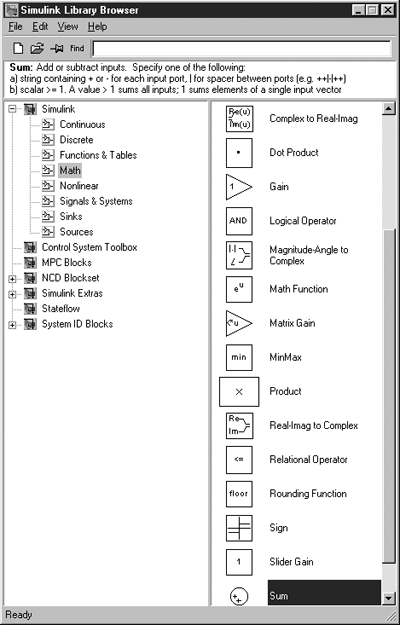
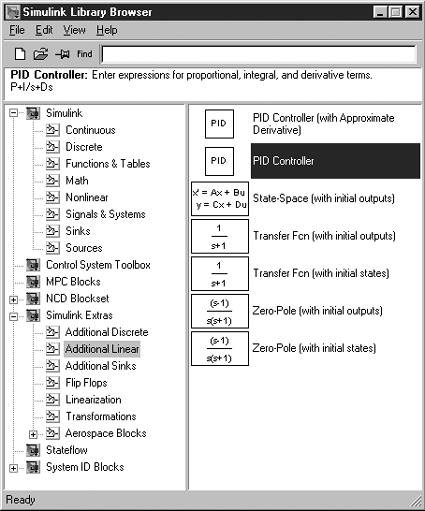
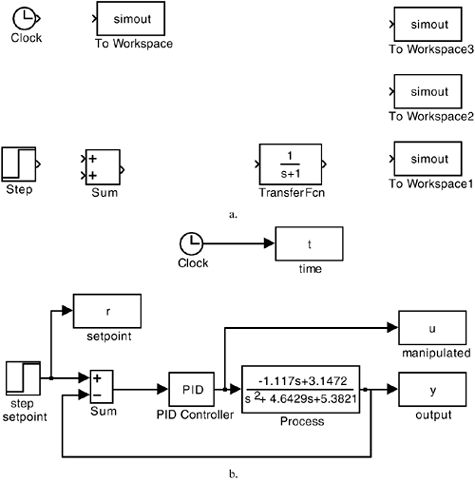
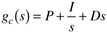
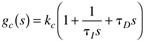
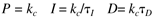
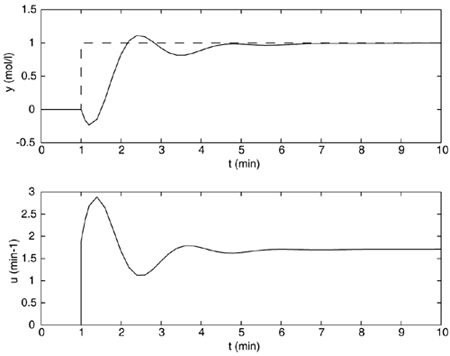
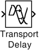
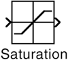
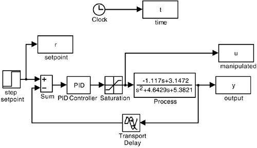

| [ Team LiB ] |
|
M2.3 Feedback-Control SimulationsThe Math icon from Figure M2-2 can be selected, resulting in the functions shown in Figure M2-6. Additional icons can be found by selecting the Simulink Extras icon shown in Figure M2-1. Selecting the Additional Linear icon from this group yields the set of icons shown in Figure M2-7. The most useful icon here is the PID Controller. Any icon can be "dragged" into the untitled model workspace. In Figure M2-8, we show the preliminary stage of the construction of a control block diagram, where icons have been dragged from their respective libraries into the untitled model workspace. Figure M2-6. SIMULINK Math. Figure M2-7. SIMULINK Additional Linear. Figure M2-8. Block diagram for feedback control of the Van de Vusse CSTR. (a) Preliminary block diagram. (b) Completed block diagram, with name and parameter changes. The labels (names below each icon) can easily be changed. The default parameters for each icon are changed by double clicking the icon and entering new parameter values. Also, connections can be made between the outputs of one icon and inputs of another. Figure M2-8b shows how the icons from Figure M2-8a have been changed and linked together to form a feedback-control block diagram. It should be noted that the form of the PID control law used by the SIMULINK PID Controller icon is not the typical form that we use as process-control engineers. The form can be found by double clicking the icon to reveal the controller transfer function representation  while we normally deal with the following PID structure:  So the numerical values for the following parameters must be entered in the SIMULINK PID controller:  The s-polynomials in the process transfer function were entered by double clicking on the transfer function and entering the coefficients for the numerator and denominator polynomials. Notice also that the default step (used for the step setpoint change) is to step from a value of 0 to a value of 1 at t = 1. These default values can be changed by double clicking the step icon. The simulation parameters can be changed by going to the Simulation "pull-down" menu and modifying the start time (default = 0), stop time (default = 10) or the integration solver method (default = ode45). The controller tuning parameters of kc = 1.89 and tI = 1.23 are used by entering P = 1.89 and I = 1.89/1.23 in the default PID Controller block. The following plot commands were used to generate Figure M2-9:
» subplot(2,1,1),plot(t,r,'--',t,y)
» xlabel('t (min)')
» ylabel('y (mol/l)')
» subplot(2,1,2),plot(t,u)
» xlabel('t (min)')
» ylabel('u (min^-1)')
Figure M2-9. Measured output and manipulated input responses to a unit step setpoint change. The curves in Figure M2-9 could be made smoother by selecting the 'refine' box in the Simulation pull-down menu. Selecting refine = 2 will plot two points for each integration step. This brief tutorial has gotten you started in the world of SIMULINK-based control block diagram simulation. You may now easily compare the effect of different tuning parameters or different formulations of a PID controller ("ideal" vs. "real," for example). Let's say you generated responses for a set of tuning parameters that we call case 1 for convenience. You could generate time, input, and output vectors for this case by setting » t1 = t; » y1 = y; » u1 = u; after running the case 1 values. You could then enter case 2 values, run another simulation, and create new vectors: » t2 = t; » y2 = y; » u2 = u; Then, compare case 1 and case 2 results by
» subplot(2,1,1),plot(t1,y1,t2,y2,'--')
» xlabel('t (min)')
» ylabel('y (mol/l)')
» subplot(2,1,2),plot(t1,u1,t2,u2,'--')
» xlabel('t (min)')
» ylabel('u (min^-1)')
which automatically plots case 1 as a solid line and case 2 as a dashed line. Similarly, you could modify the controller type by placing a transfer function block for the controller and using a "real PID" transfer function (this only differs when there is derivative action). Other Commonly Used IconsOften you will want to simulate the behavior of systems that have time delays. The Transport Delay icon can be selected from the Continuous library shown in Figure M2-2. The transport delay icon is shown in Figure M2-10. Our experience is that simulations can become somewhat "flaky" if 0 is entered for a transport delay. We recommend that you remove the transport delay block for simulations where no time delay is involved. Figure M2-10. Transport Delay icon. Manipulated variables are often constrained to between minimum (0 flow, for example) and maximum (fully open valve) values. A saturation icon from the Discontinuities library can be used to simulate this behavior. The saturation icon is shown in Figure M2-11. Figure M2-11. Saturation element. Actuators (valves) and sensors (measurement devices) often have additional dynamic lags that can be simulated by transfer functions. These can be placed on the block diagram in the same fashion that a transfer function was used to represent the process earlier. It should be noted that icons can be "flipped" or "rotated" by selecting the icon and going to the format "pull-down" menu and selecting Flip Block or Rotate Block. The block diagram of Figure M2-8 has been extended to include the saturation element and transport delay, as shown in Figure M2-12. Figure M2-12. Block diagram with saturation and time-delay elements. The default data method for the "to workspace" blocks (r,t,u,y in Figure M2-12) must be changed from "structure" to "array" in order to save data in an appropriate form for plotting. |
| [ Team LiB ] |
|